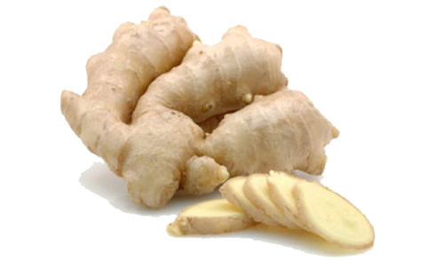
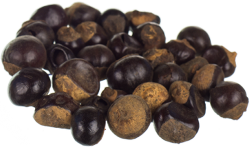

Produktbeschreibung
Der Vegan Boost wurde entwickelt, um Müdigkeit zu bekämpfen und das tägliche Leistungsniveau zu unterstützen. Es kombiniert Vitamine mit Kräutern, die in der traditionellen chinesischen Medizin verwendet werden, und ist ideal für allgemeine Müdigkeit, unnachgiebige Arbeitszeiten und hektischen Lebensstil.
Inhaltsstoffe
-
Ingwer
Ingwer ist reich an Vitamin C und enthält darüber hinaus Magnesium, Eisen, Kalzium, Kalium, Natrium und Phosphor. Das Rhizom wirkt antibakteriell und kann somit zu einer gesunden Darmflora beitragen. Ingwer wirkt außerdem virusstatisch, hemmt also die Vermehrung von Viren. Besonders die enthaltenen Scharfstoffe regen außerdem die Durchblutung und den Kreislauf an.
-
Rote Beete

Das Rote Beete Pulver stammt aus den Knollen der Rote Beete. Die Knollen werden zuerst getrocknet und dann zu Pulver gemahlen. Da die Knollen reich an Mineralstoffen und Vitaminen sind, stärken sie unser Immunsystem und versorgen den Körper mit wichtigen Nährstoffen. Zudem ist die Rote Beete reich an Eiweiß und Ballaststoffen und enthält wenig Zucker und Kalorien.
-
Guaraná
Der bedeutendste Inhaltsstoff in Guarana ist das Koffein: Zwischen 0,9 und 7,6 Prozent liegt der Koffeingehalt von Guaranapulver – und damit deutlich über dem Koffeingehalt von Kaffee, der es nur auf 1,2 bis 1,3 Prozent schafft. Noch dazu ist Koffein in Guarana für den menschlichen Körper um einiges besser verträglich als das von Kaffee.
Nährwertangaben
Brennwert |
975kj/229kcal |
|
Fett davon gesättigte Fettsäuren |
12,5g 5,4g |
|
Kohlenhydrate davon Zucker |
0,6g 0,6g |
Salz |
5,0g |
Lieferanten
-

-
Landlinie
wir vertreiben seit 1989 Produkte aus biologischem Anbau für den Handel. Wir sind Ihr BioGroßhändler, der Wert auf eine faire und vertrauensvolle Zusammenarbeit mit engagierten und vor allem zertifizierten Produzenten legt.
Wir kennen die einzelnen Anbaugebiete, Produktionsstätten und die Menschen dahinter persönlich. Aus den langjährigen Beziehungen sind sehr verlässliche Kontakte gewachsen, die es uns ermöglichen, Ihnen erstklassige Bio-Produkte anbieten zu können.
Die LANDLINIE Lebensmittel-Vertrieb GmbH mit Sitz in Hürth bei Köln ist ein Lebensmittel-Großhandel für biologisch erzeugte Produkte und Spezialist im Bio Obst- & Gemüse-Bereich. Wir sind seit über 25 Jahren erfolgreich deutschlandweit tätig, seit 1991 Demeter Vertragshändler.